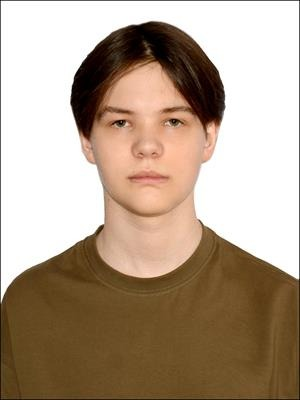

Быстрая навигация по странице
Кто я?

Подпись: Студент IT-направления
Я учусь в университете вместе со своей учебной группой, осваиваю программирование и веду активный образ жизни. В свободное время изучаю программирование, тренируюсь в зале, гуляю с друзьями..
Мой профиль с лабораторными работами: Мой GitHub
Профессиональное развитие и навыки
Мои планы для развития
Освоить базовый язык программирования и научиться работать с инструментами разработки:
- До автоматизма освоить основы одного языка
- Изучить Git и GitHub:
- Создать профиль на GitHub
- Выкладывать лабораторные с первого месяца
- Написать и запустить свой первый мини-проект (телеграм-бот, простой сайт или калькулятор) вне учебной программы
Здоровье
Повысить уровень выносливости и улучшить качество сна:
- Наладить режим: ложиться до 23:00 и спать по 7–8 часов.
- Внедрить регулярную физическую нагрузку: 3 тренировки в неделю (зал, бег) вместе с друзьями
Карьера и финансы
Выйти на новый профессиональный уровень и сформировать финансовую подушку:
- Откладывать минимум 15% от каждого дохода на накопительный счет
- Составлять список дел
- Выполнять дела вовремя
Академическая адаптация
Сдать первую и вторую сессии без «хвостов» и научиться совмещать вуз с самообразованием:
- Не запускать высшую математику
- Закрывать дедлайны по лабораторным минимум за 3 дня до сдачи
- Понять, какие дисциплины пригодятся в будущем
Мой общий план
- Адаптация
- Первые 3 месяца: привыкание к нагрузкам в вузе, настройка режима сна и знакомство с базовым синтаксисом выбранного языка.
- Погружение
- С 4 по 8 месяц: активное изучение языка, регулярные тренировки.
- Практика
- Заключительный этап: написание собственного мини-проекта и успешная сдача сессии без задолженностей.